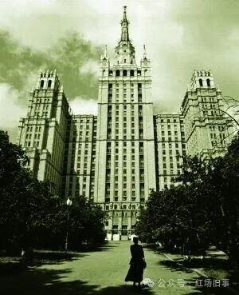
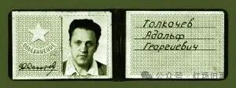
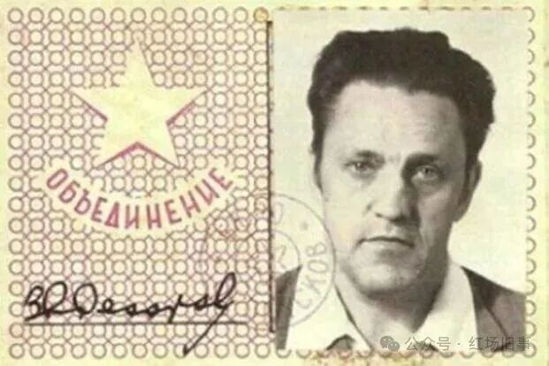
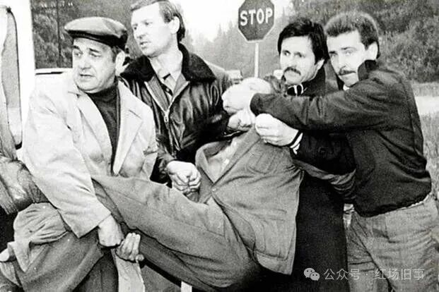
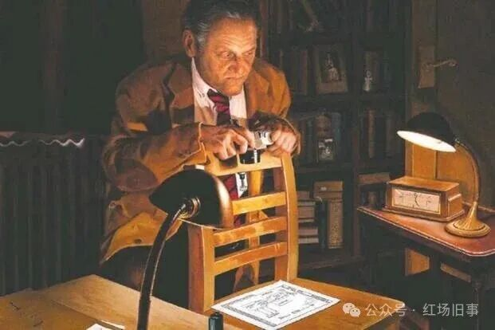

第8期 毒瘾、间谍与卫星：两个年轻人如何毁掉中情局的“天眼”第7期 他让肯尼迪看清了赫鲁晓夫的底牌——潘科夫斯基，古巴导弹危机的“隐形主角”
楔子：1985年莫斯科街头的7秒钟
1985年6月13日傍晚，莫斯科起义广场。一辆银灰色轿车缓缓驶出公寓楼，刚拐上主路，就被两名“交警”拦下。司机还没反应过来，旁边货车上突然冲下几条黑影——砸窗、拉门、戴手铐，整个过程只用了7秒钟。

托尔卡切夫居住的公寓楼
被按住的男人叫阿道夫·托尔卡切夫，58岁，苏联无线电制造研究院总设计师。邻居们眼里的他是个标准的技术宅：每天清晨跑步，从不和人闲聊，家里堆满了图纸和零件。但此刻，克格勃从他家天花板夹层里翻出的东西，让见多识广的特工都倒吸一口凉气：成捆的美元，堆起来比人还高。这不是普通的外汇黑市交易。克格勃很快发现，过去七年，这个男人一直在做一件疯狂的事——他把苏联最机密的战机雷达技术，一张图纸一张图纸地，卖给了美国人。更让克格勃脊背发凉的是：直到抓住他，他们才发现，整个苏联空军，早已是个“透明人”。
一、雨刷下的神秘纸条：谁在给CIA写信？
故事要从1977年说起。那一年，驻莫斯科的美国外交官们发现一件怪事：他们的汽车雨刷下，时不时会出现神秘纸条。纸条上只有简短的俄文：“我有绝密军事情报，愿意合作。”后面留了一个电话号码。CIA莫斯科情报站的第一反应是：陷阱，克格勃最爱玩这种把戏。但站长哈撒韦总觉得哪里不对。真正让他下定决心的，是一封长达11页的手写稿。稿子里不仅有托尔卡切夫的全名、工作单位，还有一连串苏联军用雷达的技术参数——这些信息如果出自克格勃，等于把自家底裤亮给对手看，不可能。哈撒韦赌了一把。他让手下拨通了那个电话。

托尔卡切夫在苏联实验室的工作证
电话那头的声音低沉、紧张，像是一个憋了太久终于找到出口的人。他说自己叫托尔卡切夫，是苏联顶尖雷达专家。他说自己“内心深处有如虫子在撕咬”，必须做点什么。这个人，为什么恨自己的国家？审讯记录显示，托尔卡切夫的岳父母在斯大林时代受过迫害。他自己读了索尔仁尼琴，读了萨哈罗夫，渐渐觉得自己“活在谎言里”。他在给CIA的第一封信里写：“我是个内心深处的异见分子。”但CIA后来发现，还有一个更现实的理由——钱。苏联工程师的工资只够勉强糊口，而美国人给的报酬，够他买别墅、买汽车、买一辈子都花不完的东西。
二、公园长椅上的暗号：一个工程师的七年潜伏
托尔卡切夫的代号是“天体”（Sphere）。接下来的七年，他和CIA玩起了猫鼠游戏。接头地点是一把公园长椅——被CIA称为“尼娜”的地方。托尔卡切夫每次趁着午休溜出办公室，把机密文件带回家，用宾得相机一张张拍下来。有时候来不及，就躲在男厕所里，用CIA提供的隐形相机——藏在钥匙挂扣里——当场拍照。他把胶卷藏在公园长椅的木板下，CIA特工假装散步顺手取走。下一次，长椅下会出现新的暗号：一张用俄语写的“购物清单”，其实是下一步行动的指令。为了不让克格勃发现他在大量借阅资料，CIA甚至帮他伪造了借阅记录——根据他提供的签名样本，CIA制作了假的登记表格，他每次借阅后，都在假表上登记，而真表上的借阅次数被悄悄“减少”。

由中央情报局制作的一张身份证，旨在仿制阿道夫.托尔卡切夫的建筑物通行证，以便从他所在的苏联军事学院取走机密文件。
就这样，七年时间，他带出的情报装满了CIA的保险柜。这些情报有多值钱？CIA后来算了笔账：他泄露了米格-29、苏-27的电子控制系统、S-300防空系统的技术参数、苏联战机如何躲避美国雷达的“对抗手册”——甚至有一套新型雷达的技术，比苏联实际部署早了整整十年。
三、叛徒的代价：那个把托尔卡切夫卖掉的人
托尔卡切夫以为自己做得天衣无缝。但他不知道，千里之外，有一个人正在把他推向死亡。那个人叫爱德华·李·霍华德，CIA前特工。他因为吸毒和盗窃被开除，怀恨在心。1985年，他在维也纳找到克格勃，把自己知道的所有CIA秘密和盘托出——其中就包括托尔卡切夫的名字。克格勃收到情报后没有立即动手。他们花了几个月时间，悄悄梳理托尔卡切夫七年的行动轨迹。越查越心惊：原来这么多年的“绝密”，早就成了美国人的睡前读物。四、将计就计：克格勃的反击棋局震惊过后，克格勃没有急着愤怒，而是迅速制定了一个更大胆的计划。他们要让托尔卡切夫继续“工作”——只不过这一次，他传递的将是假情报。克格勃的分析很冷静：托尔卡切夫为美国服务多年，提供了无数货真价实的绝密情报，早已赢得CIA的深度信任。这种信任不会因为他被捕就立即消失——美国人短期内根本不会怀疑他的情报来源。于是，一场精心策划的“反间计”悄然启动。在研究托尔卡切夫的借阅记录时，克格勃发现一个细节：从1981年起，他一直对苏联隐形轰炸机的研究项目表现出浓厚兴趣。而恰恰在这一时期，美国也在加紧研发自己的隐形战机。这是一个绝佳的突破口。克格勃下属的无线电工业研究所秘密实验室，专门为托尔卡切夫“定制”了一套复杂的虚假技术资料。这些资料被精心包装成绝密文件，存放在托尔卡切夫可以接触到的秘密图书馆里。接下来的十个月里，托尔卡切夫——现在是在克格勃的严密监视下——准确无误地继续向美国传递情报。只是这一次，胶卷里的内容全是苏联人想让他传的东西。美国人如获至宝。诺思罗普公司负责研制隐形战机的工程师们为了抢进度，在许多关键环节上完全照搬了托尔卡切夫提供的技术。他们不知道，这些技术参数里埋着苏联人设下的陷阱。后果是灾难性的。等到美国工程师发现技术偏差时，已经浪费了整整八年时间。第一架隐形轰炸机直到1991年才投入使用，比原计划晚了将近十年。
五、一百万美元和一粒子弹
1985年6月13日，克格勃设下陷阱。他们按照约定，打开了托尔卡切夫家的小气窗——那是他和CIA约定的“安全信号”。一辆从美国大使馆驶出的车看到信号后，前往接头地点。车上坐着CIA特工，带着十万卢布——这本来是给托尔卡切夫的一笔报酬。车刚停稳，克格勃特工一拥而上。

阿道夫·托尔卡切夫于1985年被捕
当天下午，托尔卡切夫被捕。克格勃搜查托尔卡切夫家时，在天花板夹层里找到的东西，让所有人都沉默了：成捆的美元，加起来超过一百万。在1985年的苏联，这是个天文数字。审讯官问他为什么要钱，他说：“我想让家人过好日子。”问他为什么背叛祖国，他说：“我看了索尔仁尼琴的书。”审讯持续了几个月。托尔卡切夫一开始很配合，但问到关键细节时，他开始沉默。有一次他对审讯官说：“我为了科学无国界。”审讯官冷冷地回他：“但你的国家有边界，你跨过去了。”1985年秋天，苏联最高人民法院判处他死刑。行刑前，他曾请求赦免，被驳回。1986年，他在卢比扬卡地下室被处决。枪响的前一刻，托尔卡切夫仍相信美国会救他，但美国没有。他不知道的是，那个把他卖掉的人，此刻正拿着克格勃给的赏金，躲在某个角落喝酒。
六、画像挂在CIA总部的人
托尔卡切夫死后，CIA一度沉默。他们不敢承认自己损失了最宝贵的间谍。很多年后，CIA解密档案才慢慢浮出水面。美国国防情报局的评估报告里写着一句话：“托尔卡切夫为美国纳税人节省了至少10-20亿美元。”考虑到通货膨胀的因素，这笔钱相当于今天的50-100亿美元。今天，走进CIA总部兰利大楼，你会在墙上看到一幅画像。画像里的人穿着普通西装，戴眼镜，看起来像个沉默的技术员。画像下面写着一行字：“阿道夫·托尔卡切夫，间谍一号。”他是唯一一个画像挂在那里的俄罗斯人。

阿道夫·托尔卡切夫的CIA画像
托尔卡切夫是CIA最值钱的间谍，也是苏联军事工业的噩梦。你认为，他背叛的根本原因是什么？欢迎在评论区分享你的想法。下一期预告：波利亚科夫——克格勃最成功的叛徒
25年间，他出卖了19名潜伏特工、1500名情报员名单，却让克格勃用了十几年才抓住他。他的结局是什么？敬请期待。